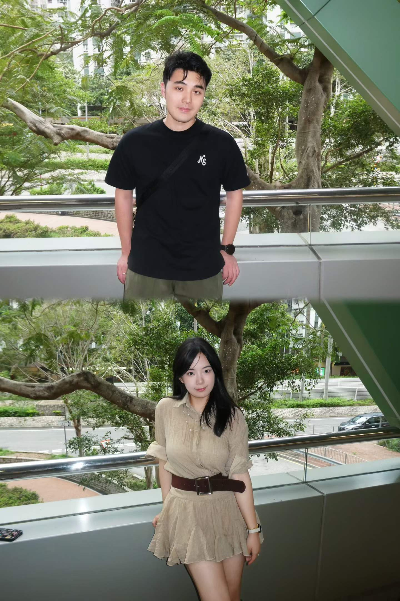
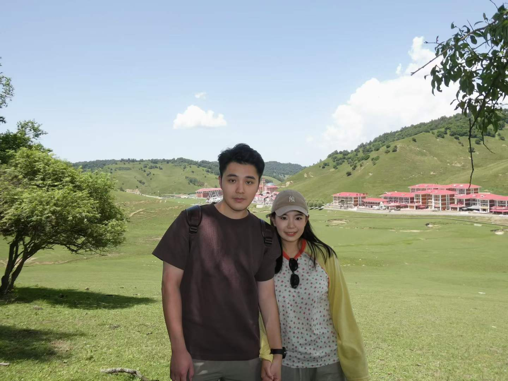
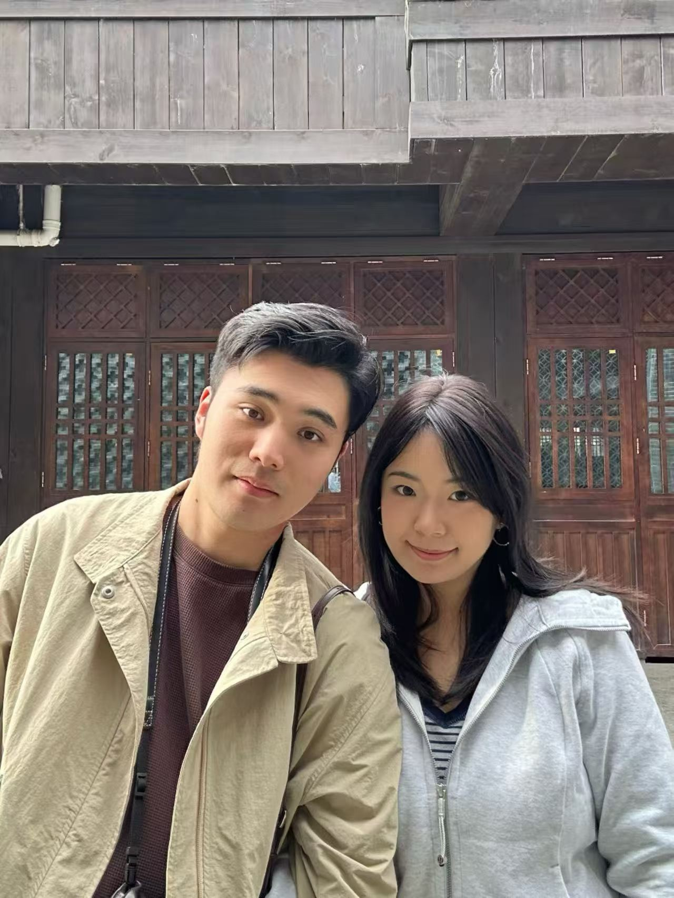

01
2024.04 · 傍晚
上海 · 梧桐树下
风从街角拐过来，旧建筑的窗框像一格格胶片。我们慢慢走，像把一天拉长了一点点。

Our Little Journey
把音乐、城市、照片和想说的话收进同一页。等真实地点和文字补上后，它会变成只属于你们的一条时间线。
2024.04 · 傍晚
风从街角拐过来，旧建筑的窗框像一格格胶片。我们慢慢走，像把一天拉长了一点点。

2024.08 · 雨后
雨停以后，湖面像被悄悄擦亮。照片里有很多留白，刚好放得下没有说出口的喜欢。


2025.01 · 夜色
夜晚的灯很柔，热气从店门口冒出来。那一刻的普通，因为一起经历过，就变得很珍贵。
A Letter